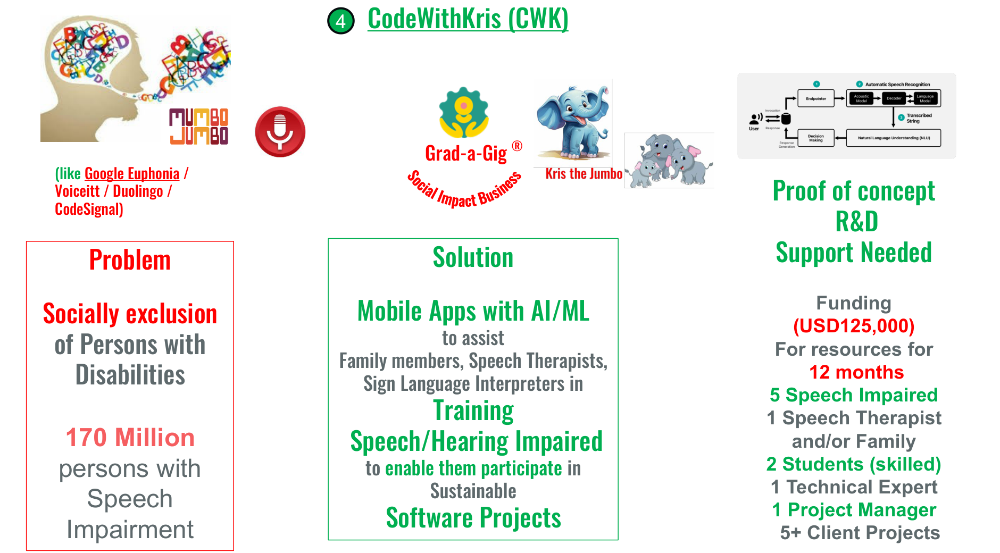
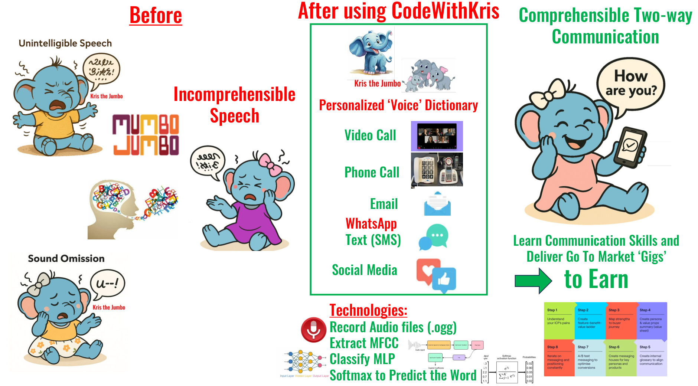
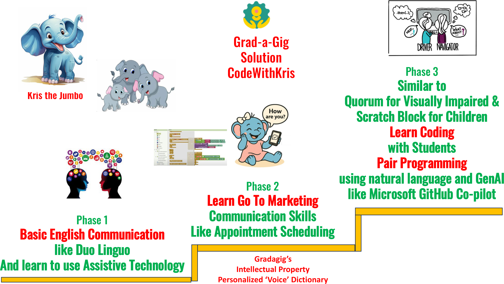

1
Basic Communication
Like Duolingo for accessible English. Learners build vocabulary, practice comprehension, and get comfortable with assistive technology.
An inclusive learning prototype that helps persons with speech and hearing impairments build real-world communication and coding skills — so they can take part in paid software gigs.
More than 170 million people worldwide live with speech impairments. Many are socially excluded from education and employment, not because of ability, but because mainstream tools and training are not designed for them.
CodeWithKris is Grad-a-Gig’s research initiative to change that. Inspired by approaches like Google Euphonia, Voiceitt, Duolingo, and CodeSignal, it combines AI/ML assistive technology with structured, phased learning.

The system records and learns a user’s speech patterns, then translates them into comprehensible two-way communication across everyday channels.
Capture the user’s voice or sounds in short audio clips (.ogg format).
Convert speech into Mel-Frequency Cepstral Coefficients that an ML model can learn.
A Multi-Layer Perceptron neural network maps patterns to words in a personalized voice dictionary.
Softmax output predicts the intended word, enabling email, chat, video calls, phone calls, WhatsApp, and SMS.

CodeWithKris progresses learners from basic communication to real software delivery, guided by Kris the Jumbo.
Like Duolingo for accessible English. Learners build vocabulary, practice comprehension, and get comfortable with assistive technology.
Practice real work scenarios — appointment scheduling, client emails, social outreach — using the personalized voice dictionary.
Pair programming with students, using natural language and GenAI assistants like GitHub Copilot. Inspired by Quorum for visually impaired learners and Scratch blocks for beginners.

CodeWithKris is currently in the R&D and prototyping phase. The goal is to validate a scalable, AI-assisted learning path that turns assistive communication into employable software skills.
Personalized speech model for a small cohort of speech-impaired users.
Apps for learners, families, speech therapists, and sign-language interpreters.
Learners join Grad-a-Gig pods and contribute to real client projects.

Prototype Status
CodeWithKris is actively seeking R&D support and pilot collaborators. If you are a speech therapist, accessibility researcher, or impact investor, we would love to hear from you.
See the live product demos already built by Grad-a-Gig delivery pods, and register your interest in the CodeWithKris research initiative.